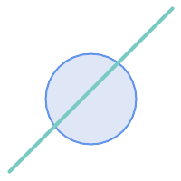
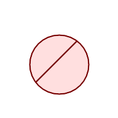
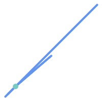

Name
ST_Split — ジオメトリを他のジオメトリで分割してできたジオメトリのコレクションを返します。
Synopsis
geometry ST_Split(geometry input, geometry blade);
説明
この関数は、(MULTI)LINESTRING、 (MULTI)POLYGONの境界でLINESTRINGを分割するか、LINESTRINGで (MULTI)POLYGONを分割します。結果ジオメトリは常にコレクションです。
この関数はST_Unionの逆のようなものです。返されるコレクションにST_Unionを与えると、理論的には元のジオメトリが得られます (丸め誤差のために確実に同じになるものではありません)。
Availability: 2.0.0 GEOSが必要です
Enhanced: 2.2.0 ライン分割をマルチライン、マルチポイントまたはポリゴンもしくはマルチポリゴンの境界で行えるようにしました。
Enhanced: 2.5.0 マルチラインによるポリゴンの分割に対応するようになりました。
![[Note]](images/note.png) | |
ST_Splitのロバスト性を改善するには、非常に低い許容誤差を使用する前に、入力ジオメトリを、刃ジオメトリに対してST_Snapすると良いかも知れません。内部で使用されている座標グリッドは、許容誤差に関する問題を引き起こす可能性があります。入力座標と刃がお互いの上に落ちず、入力が正しく分割されない場合があります (#2192を参照して下さい)。 |
| |
(MULTI)ポリゴンを刃として渡すと、線要素 (境界)が入力の分割に使われます。 |
例
ラインに切られるポリゴン
|
 分割前
|
 分割後
|
-- ポリゴンを2個に割ったものからなるジオメトリコレクションを生成します
-- ST_BuildAreaの例と似ています
SELECT ST_Split(circle, line)
FROM (SELECT
ST_MakeLine(ST_MakePoint(10, 10),ST_MakePoint(190, 190)) As line,
ST_Buffer(ST_GeomFromText('POINT(100 90)'), 50) As circle) As foo;
-- 結果 --
GEOMETRYCOLLECTION(POLYGON((150 90,149.039264020162 80.2454838991936,146.193976625564 70.8658283817455,..), POLYGON(..)))
-- 個々のポリゴンに変換するには、ST_DumpまたはST_GeometryNを使います
SELECT ST_AsText((ST_Dump(ST_Split(circle, line))).geom) As wkt
FROM (SELECT
ST_MakeLine(ST_MakePoint(10, 10),ST_MakePoint(190, 190)) As line,
ST_Buffer(ST_GeomFromText('POINT(100 90)'), 50) As circle) As foo;
-- 結果 --
wkt
---------------
POLYGON((150 90,149.039264020162 80.2454838991936,..))
POLYGON((60.1371179574584 60.1371179574584,58.4265193848728 62.2214883490198,53.8060233744357 ..))
ポイントで切られるマルチラインストリング
|
 分割前
|
分割後
|
SELECT ST_AsText(ST_Split(mline, pt)) As wktcut
FROM (SELECT
ST_GeomFromText('MULTILINESTRING((10 10, 190 190), (15 15, 30 30, 100 90))') As mline,
ST_Point(30,30) As pt) As foo;
wktcut
------
GEOMETRYCOLLECTION(
LINESTRING(10 10,30 30),
LINESTRING(30 30,190 190),
LINESTRING(15 15,30 30),
LINESTRING(30 30,100 90)
)